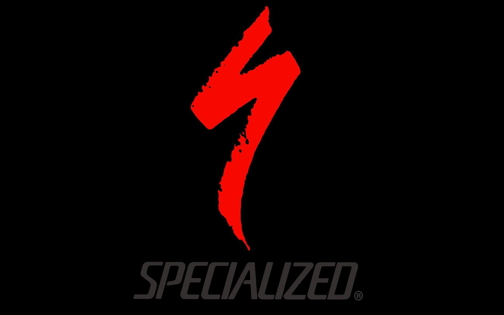
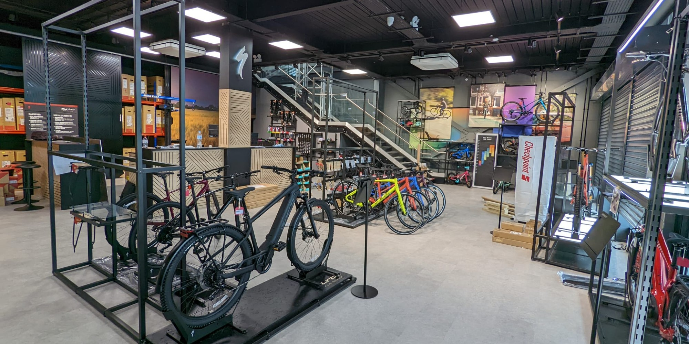
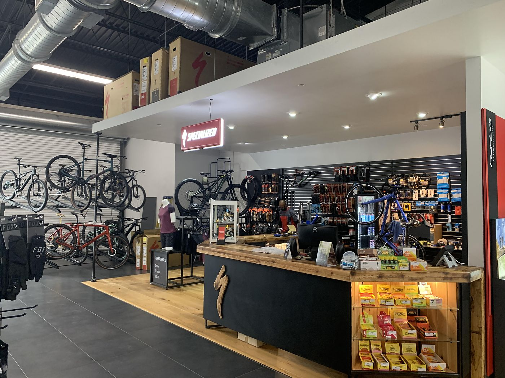

Specialized — американська, яка виробник велосипеди та інвентар для велосипедного спорту. Є четвертою за величиною велосипедної компанією США і провідним інноватором в велосипедної галузі. Заснована Майком Синьярдом (Mike Sinyard) в 1974 році. Штаб-квартира знаходиться в місті Морган-Хілл, штат Каліфорнія. Компанія випускає обладнання для ряду велосипедних дисциплін: маунтинбайку, шосейного велоспорту, BMX, велокросу, а також гібридні, дорожні, дитячі велосипеди, електровелосипеди.
Заснування компанії
Засновник компанії Майк Синьярд захопився велосипедами у віці семи років, коли батько купив йому старий жіночий велосипед. Байк був у поганому стані і батько Майка, який працював механіком і відмінно розбирався в техніці, разом з сином зайнявся його відновленням. Згодом його батько став скуповувати старі велосипеди і лагодити їх, після чого Майк займався фарбуванням, а потім їх продавали на місцевому блошиному ринку. З часом захоплення Майка велосипедами зростало під час навчання в коледжі Сан-Дієго він практично щодня добирався на своєму байку 7—8 миль до місця навчання, а також продовжував займатися ремонтом старих велосипедів, продаючи їх через оголошення в газетах. Кинувши навчання, Майк продав свій мікроавтобус Фольксваген за 1500 доларів і на виручені кошти влаштував велотур по Європі, однією з цілей якого був пошук недоступного на американському ринку обладнання для свого велосипеда. У Мілані він познайомився з дівчиною, влаштував йому зустріч з італійськими виробниками шосейних велосипедів і велосипедних компонентів. Майк був здивований, дізнавшись, що компанії Campagnolo і Cinelli згодні постачати йому компоненти для продажу в США, де гостро відчувалася нестача високоякісної велосипедного обладнання. Закупивши компоненти на решту з продажу мікроавтобуса гроші, Синьярд повернувся в США. У Каліфорнії він за 60 доларів в місяць орендував під склад трейлер, склав рукописний каталог товарів і почав об'їжджати з ним місцеві веломагазини. Розпродавши обладнання за 1'300 доларів при початкових витратах у 1100 доларів, Майк уклав, що попит на якісні компоненти не задоволений і успішне починання варто продовжити, але у нього не було достатньо грошей, щоб замовляти їх безпосередньо з Італії. Тоді він зумів переконати замовників працювати по передоплаті, заробляючи на підвищенні закупівельної ціни на 10-15 відсотків. Ця виявилася вдалою схема і послужила початком компанії. В якості її назви був обраний термін Specialized, який, як зазначає Майк, в Італії означає відданість й залученість до нього. За 1974 рік оборот компанії склав 64 тисячі доларів, а в наступному році досяг 128 тисяч, при цьому при такій схемі роботи Майк практично не мав витрат.
Початок власного виробництва
Успішно розпочавши бізнес, у 1976 році Майк вирішив організувати власне виробництво. Він не був задоволений якістю імпортованих з Італії шин. Після року роботи Синьярд представив на ринок власний продукт — шини Specialized для туристичних велосипедів. За словами Майка, це був справжній прорив, так як компанія стала чимось більшим, ніж просто імпортером — вона стала інноватором. Підтверджуючи прагнення запроваджувати новітні технології, в 1978 році Specialized першими на велосипедному ринку випустили фолдингові клинчерні шини Turbo з бортами з кевларового троса. В цьому році річний оборот компанії досяг мільйона доларів, що дозволило Майку Синьярду перейти до випуску власних моделей велосипедів. Перша з них, Allez, була представлена в 1979 році і призначалася для шосейних перегонів. Друга модель дістала назву Sequoia і була оснащена туристичної рамою. Рами Specialized, як і шини, що були виготовлені на замовлення в Японії, і, як зазначає сам Майк, він був воістину натхненний чудовою якістю японського виробництва.
Продукція
Продукція Specialized поділяється на три категорії: екіпірування для велосипедного спорту, велосипедне обладнання і безпосередньо самі велосипеди. Серед велосипедів, які випускає компанія, є моделі практично всіх основних видів велосипедів: від професійних шосейних і гірських до аматорських прогулянкових, дитячих і навіть електровелосипедів. Велосипедне обладнання Specialized представлено покришками для гірських, шосейних і дорожніх велосипедів; велосипедними камерами; сідлами, вирощеними за технологією Body Geometry з урахуванням особливостей анатомії людини; колесами серії Roval для різних типів велосипедів; пляшками для пиття і кріпленнями для них; різними велокомпонентами; велокомп'ютерами і велонасосами. Серед екіпірування, яке випускає компанія, є шоломи для різних дисциплін велоспорту, велосипедне взуття та одяг (шапочки, кепки, куртки, джерсі, рукавички, трико, шорти, шкарпетки) і сумки. Модельний ряд велосипедів 2014 року розділений на сім категорій: гірські, шосейні, гібридні, електровелосипеди, BMX/дьорт велосипеди, дитячі та дорожні велосипеди. В залежності від спортивної дисципліни велосипеди поділяються на типи, при цьому кожна модель випускається в декількох варіантах в залежності, в першу чергу, від комплектації.


.jpeg)